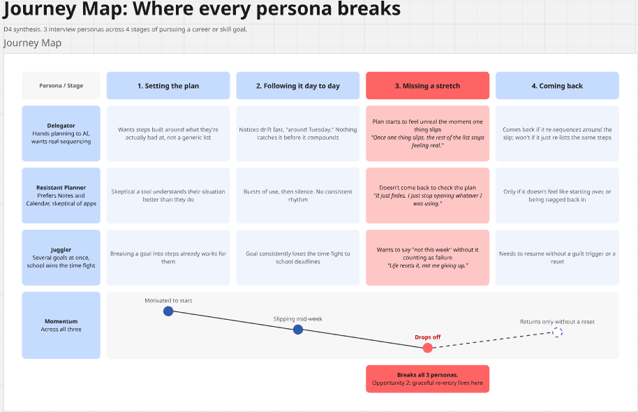
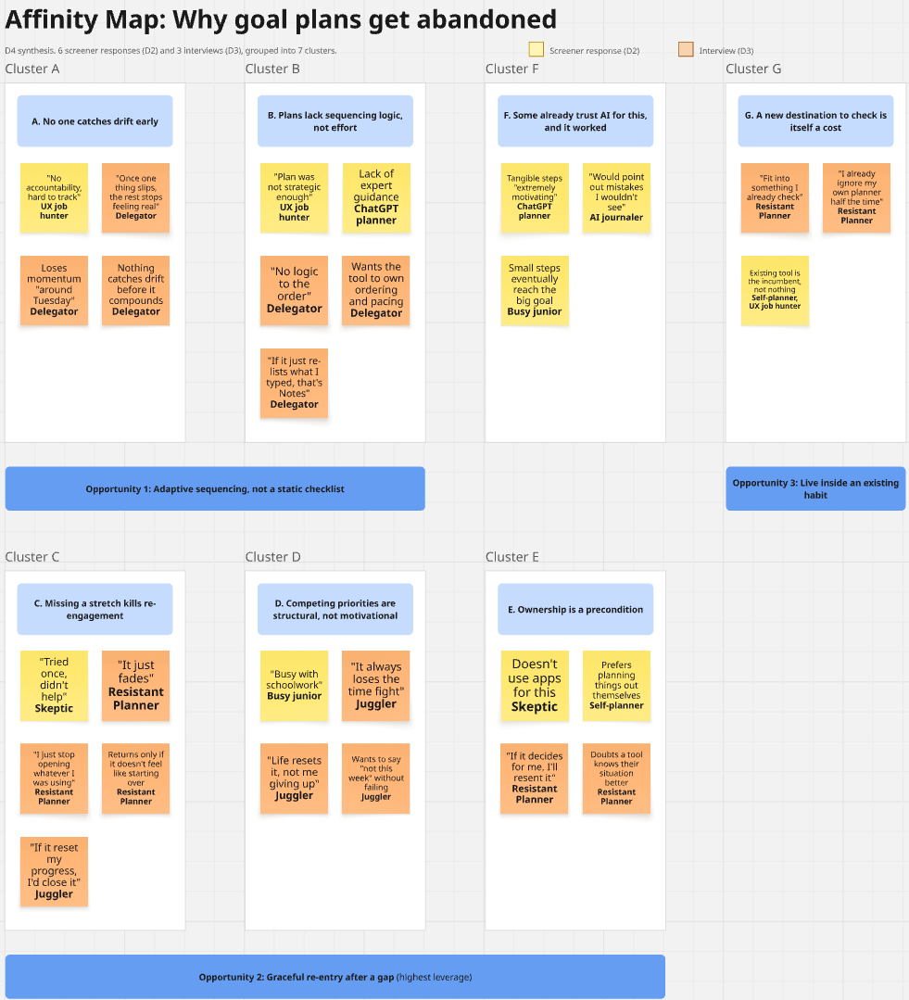

D2 · Screener
Follow-through breaks people, not goal-setting.
Sep 16, 2026
This is the original screener, sent under the old career-coaching framing, before any of the pivoting happened. It sat unread through the whole RPI Hub detour. The results were limited, but the pattern that came through was consistent enough that I built D3 and D4 on it.
What I asked
- What year are you in school, and what are you job/internship hunting for?
- Think of a career or skill goal you set recently. What was it?
- What made it hard to actually follow through, day to day?
- Have you used an app, planner, or AI tool to help stick to a goal like this? What happened?
- If a tool could break a big goal into small steps and check in with you, would that help? Why or why not?
- Would you be open to a 15-min video chat about this?
Who answered
| Who | Goal | What got in the way | Would help? |
|---|---|---|---|
| The ChatGPT planner | Learning a skill | Lack of expert guidance, willpower | Yes, tangible steps "extremely motivating" |
| The busy junior | Various projects | Busy with schoolwork | Yes, small steps eventually reach the big goal |
| The skeptic | Learning skills | Consistency | No, doesn't use apps for this, tried once, didn't help |
| The AI journaler | Learn patience and discipline | "The greed": emotional framing, not logistics | Yes, "would point out mistakes I wouldn't see myself" |
| The self-planner | Get comfortable with design tools (Adobe) | Motivation dips some days | No, prefers planning things out themselves |
| The UX job hunter | UX tools, time management, job search, AI trends | No accountability, hard to track, unsure where to start | Yes, "a lot" |
A few said yes to a follow-up conversation. That became the three interviews below.
What actually stands out
It's follow-through, not the goal. Most people point at accountability, consistency, motivation, or just not knowing where to start. Not unclear goals, not missing information. The AI journaler is the outlier here, describing the friction in emotional terms instead of logistics.
Almost everyone's already tried something, and it mostly didn't stick. Only the UX job hunter actually says why: the plan "wasn't strategic enough." That's the clearest hint I've got for what this needs to do differently than a plain planner.
The split tracks a real line, not noise. People already leaning on AI for planning say yes. People who default to their own system say no, not because the problem isn't real for them, but because they don't want to hand over ownership of the plan.
D3 · Interviews
Three different people, three different reasons to reject the same generic plan.
Sep 23, 2026
I followed up with three interviews, each built around a distinct pattern from the screener above: what actually earns trust, what makes someone stop using a tool, who should stay in control day to day.
Interview guide
- Walk me through the last time you tried to work toward that goal. What did a normal day/week actually look like?
- When did you first notice yourself losing momentum? What was happening around then?
- You said you [used / didn't use] a tool for this. Walk me through what that actually looked like.
- What would have to be true for you to trust a tool with something this personal?
- In the ideal version of this, who's in control day to day: you, or the tool?
- What would make you stop using something like this after a week?
What came out of the three interviews
The Delegator
Actively hunting for a UX internship, and already hands their planning over to AI. What's frustrated them is that everything they've tried just spits out a flat list with no real sequencing.
"Around Tuesday, usually — once one thing slips, the rest of the list stops feeling real."
"It would need to actually know what I'm bad at sticking to, not just take my word for what I plan on day one. If it just re-lists what I typed, that's the same as Notes."
"Honestly, I want it in control of the ordering and pacing. I'll do the work, I just don't trust myself to sequence it right."
The Resistant Planner
Tried a tool before and it didn't help, or just prefers Notes and Calendar to begin with. Skeptical that any app actually changes follow-through.
"There's no clean moment, it just... fades. Nothing dramatic happens, I just stop opening whatever I was using."
"It would have to fit into something I already check, not be its own destination. I already ignore my own planner half the time."
"Me. If it's making decisions for me I'll probably resent it and stop opening it, same as the last thing."
The Juggler
Juggling a few goals at once, and it's competing time (mostly school) that gets in the way, not motivation or trust.
"Whenever a school deadline shows up. It's not that I forget the goal, it's that it always loses the time fight."
"It'd need to handle me disappearing for a week without treating that as failure. Life resets it, not me giving up."
"If missing a week made it guilt-trip me or reset all my progress, I'd just close it and not come back."
All three reject "generic plan plus nagging reminders," just for completely different reasons. That's the strongest thing D3 hands off to D4: three different angles landing on the same wall.
D4 · Synthesis
The fix isn't a smarter plan. It's forgiving a missed week.
Due Sep 30 · built from D2 and D3
I put all three personas against the same journey, stage by stage. One column breaks every single one of them, and it's not the planning step. It's what happens after someone misses a stretch.

Affinity map
